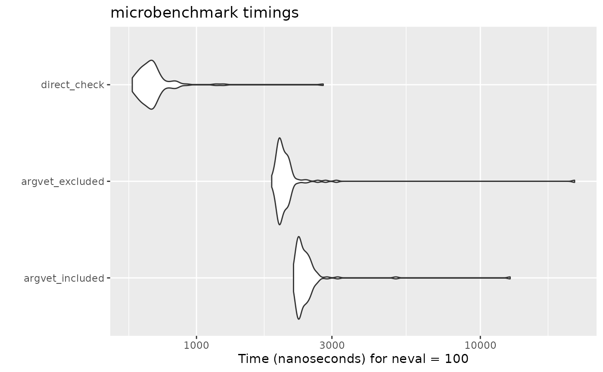
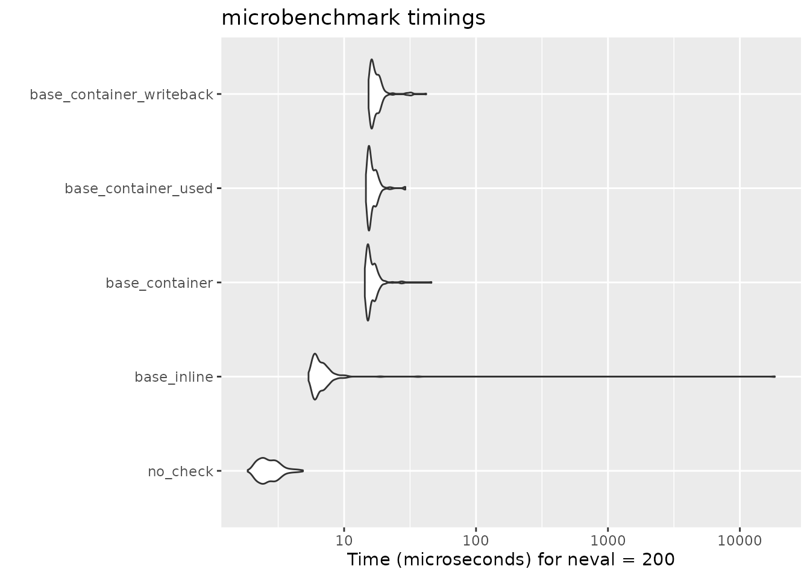
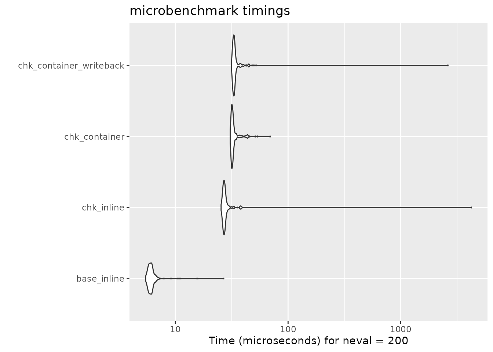
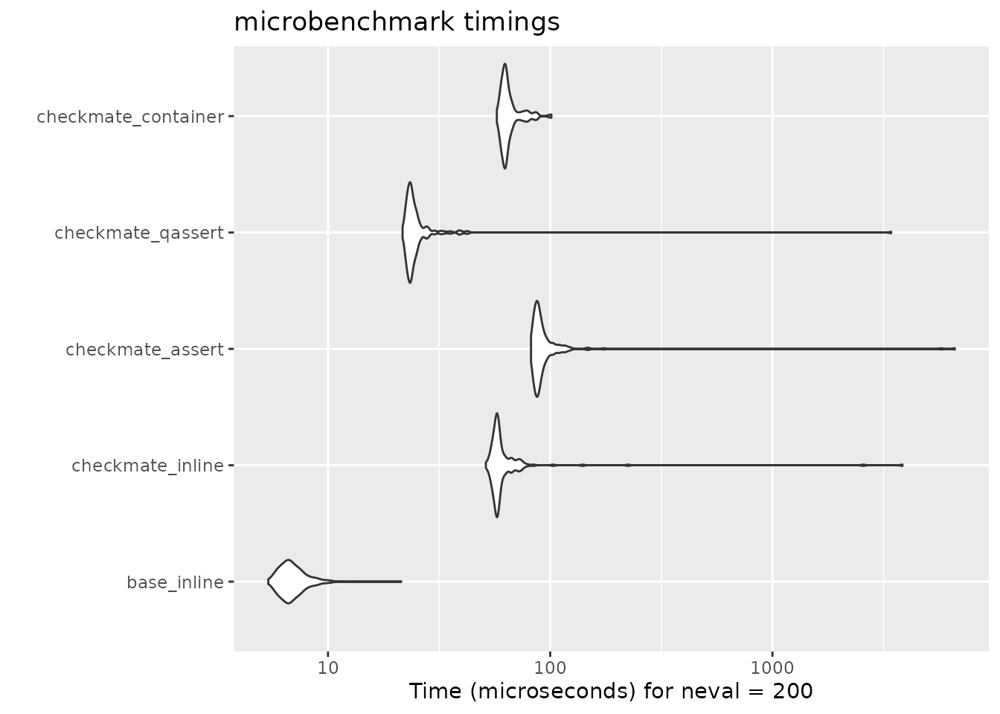
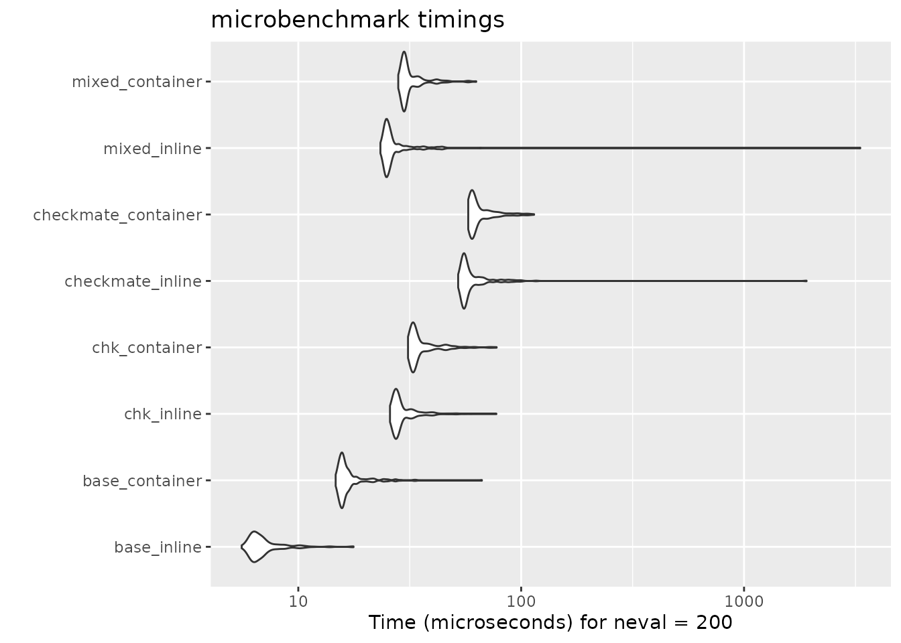

Performance cost in argument passing:
check_fn <- make_arg_validator({
if (!is.integer(x)) {
stop("x must be integer")
}
if (!is.integer(y)) {
stop("y must be integer")
}
})
stats <- microbenchmark(
argvet_included = {
check_fn_inner <- make_arg_validator({
if (!is.integer(x)) {
stop("x must be integer")
}
if (!is.integer(y)) {
stop("y must be integer")
}
})
f <- function(x, y) {
check_fn_inner()
x + y
}
f(1L, 2L)
},
argvet_excluded = {
f <- function(x, y) {
check_fn()
x + y
}
f(1L, 2L)
},
direct_check = {
f <- function(x, y) {
if (!is.integer(x)) {
stop("x must be integer")
}
if (!is.integer(y)) {
stop("y must be integer")
}
x + y
}
f(1L, 2L)
}
)
print(stats)
#> Unit: nanoseconds
#> expr min lq mean median uq max neval
#> argvet_included 2197 2284 2517.15 2344.5 2470.0 12738 100
#> argvet_excluded 1841 1950 2238.91 1994.0 2092.5 21480 100
#> direct_check 594 648 722.11 686.5 720.5 2796 100
ggplot2::autoplot(stats)
#> Warning: `aes_string()` was deprecated in ggplot2 3.0.0.
#> ℹ Please use tidy evaluation idioms with `aes()`.
#> ℹ See also `vignette("ggplot2-in-packages")` for more information.
#> ℹ The deprecated feature was likely used in the microbenchmark package.
#> Please report the issue at
#> <https://github.com/joshuaulrich/microbenchmark/issues/>.
#> This warning is displayed once per session.
#> Call `lifecycle::last_lifecycle_warnings()` to see where this warning was
#> generated.
The cost of creating validator container can be negligible.
Performance cost in heavy validation:
heavy_args <- list(
name = "model_01",
threads = 4L,
seed = 42L,
arg_1 = 1,
arg_2 = 2,
arg_3 = 3,
arg_4 = 4,
arg_5 = 5,
lower = 0,
upper = 10,
tolerance = 0.5,
verbose = TRUE
)
# Every candidate has exactly these 12 formals; only the body changes.
make_fit <- function(expr) {
f <- function(
name,
threads,
seed,
arg_1,
arg_2,
arg_3,
arg_4,
arg_5,
lower,
upper,
tolerance,
verbose
) {
NULL
}
body(f) <- expr
f
}
# Compile one block of rules twice: into an argvet container, and into the
# body of a plain function. This keeps both arms perfectly comparable.
compile_rules <- function(rules) {
block <- substitute(rules)
validator <- eval(call("make_arg_validator", block))
inline <- make_fit(as.call(c(
list(as.name("{")),
as.list(block)[-1L],
list(quote(arg_1 + arg_2))
)))
list(validator = validator, inline = inline)
}
median_us <- function(mb) {
s <- summary(mb)
stats::setNames(s$median, as.character(s$expr))
}
bm_times <- 200LThe rule blocks. base uses hand-written tests,
chk uses only chk, checkmate uses
only checkmate (in three different idioms), and
mixed combines the last two as shown in the README. All of
them pass for heavy_args, so no error path is being
timed.
base_rules <- compile_rules({
if (!is.character(name) || length(name) != 1L || is.na(name)) {
stop("name")
}
if (!nzchar(name)) {
stop("name")
}
if (!is.integer(threads) || length(threads) != 1L || is.na(threads)) {
stop("threads")
}
if (threads < 1L || threads > 64L) {
stop("threads")
}
if (!is.integer(seed) || length(seed) != 1L || is.na(seed)) {
stop("seed")
}
if (seed < 0L) {
stop("seed")
}
for (v in list(arg_1, arg_2, arg_3, arg_4, arg_5)) {
if (!is.numeric(v) || length(v) != 1L || is.na(v)) {
stop("arg")
}
if (v < lower || v > upper) stop("arg")
}
if (!is.numeric(lower) || length(lower) != 1L || is.na(lower)) {
stop("lower")
}
if (!is.numeric(upper) || length(upper) != 1L || is.na(upper)) {
stop("upper")
}
if (lower >= upper) {
stop("lower/upper")
}
if (!is.numeric(tolerance) || length(tolerance) != 1L || is.na(tolerance)) {
stop("tolerance")
}
if (tolerance <= 0) {
stop("tolerance")
}
if (!is.logical(verbose) || length(verbose) != 1L || is.na(verbose)) {
stop("verbose")
}
if (arg_1 + arg_2 + arg_3 + arg_4 + arg_5 > 10 * upper) stop("sum")
})
chk_rules <- compile_rules({
chk::chk_string(name)
chk::chk_integer(threads)
chk::chk_gte(threads, 1L)
chk::chk_lte(threads, 64L)
chk::chk_whole_number(seed)
chk::chk_gte(seed, 0L)
for (v in list(arg_1, arg_2, arg_3, arg_4, arg_5)) {
chk::chk_number(v)
chk::chk_gte(v, lower)
chk::chk_lte(v, upper)
}
chk::chk_number(lower)
chk::chk_number(upper)
chk::chk_number(tolerance)
chk::chk_gt(tolerance, 0)
chk::chk_flag(verbose)
})
cm_rules <- compile_rules({
checkmate::assertString(name)
checkmate::assertInt(threads)
checkmate::assertInt(threads, lower = 1L)
checkmate::assertInt(threads, upper = 64L)
checkmate::assertCount(seed)
for (v in list(arg_1, arg_2, arg_3, arg_4, arg_5)) {
checkmate::assertNumber(v)
checkmate::assertNumber(v, lower = lower)
checkmate::assertNumber(v, upper = upper)
}
checkmate::assertNumber(lower)
checkmate::assertNumber(upper)
checkmate::assertNumber(tolerance)
checkmate::assertNumber(tolerance, lower = 0)
checkmate::assertFlag(verbose)
})
cm_assert_rules <- compile_rules({
checkmate::assert(
checkmate::checkString(name),
checkmate::checkInt(threads),
checkmate::checkInt(threads, lower = 1L),
checkmate::checkInt(threads, upper = 64L),
checkmate::checkCount(seed),
checkmate::checkNumber(arg_1),
checkmate::checkNumber(arg_1, lower = lower),
checkmate::checkNumber(arg_1, upper = upper),
checkmate::checkNumber(arg_2),
checkmate::checkNumber(arg_2, lower = lower),
checkmate::checkNumber(arg_2, upper = upper),
checkmate::checkNumber(arg_3),
checkmate::checkNumber(arg_3, lower = lower),
checkmate::checkNumber(arg_3, upper = upper),
checkmate::checkNumber(arg_4),
checkmate::checkNumber(arg_4, lower = lower),
checkmate::checkNumber(arg_4, upper = upper),
checkmate::checkNumber(arg_5),
checkmate::checkNumber(arg_5, lower = lower),
checkmate::checkNumber(arg_5, upper = upper),
checkmate::checkNumber(lower),
checkmate::checkNumber(upper),
checkmate::checkNumber(tolerance),
checkmate::checkNumber(tolerance, lower = 0),
checkmate::checkFlag(verbose),
combine = "and"
)
})
cm_qassert_rules <- compile_rules({
checkmate::qassert(name, "s1")
checkmate::qassert(threads, "i1")
checkmate::qassert(threads, "i1[1,64]")
checkmate::qassert(seed, "i1[0,Inf]")
for (v in list(arg_1, arg_2, arg_3, arg_4, arg_5)) {
checkmate::qassert(v, "n1")
checkmate::qassert(v, "n1[0,10]")
}
checkmate::qassert(lower, "n1")
checkmate::qassert(upper, "n1")
checkmate::qassert(tolerance, "n1")
checkmate::qassert(tolerance, "n1(0,Inf]")
checkmate::qassert(verbose, "b1")
})
mixed_rules <- compile_rules({
chk::chk_string(name)
chk::chk_integer(threads)
checkmate::assertCount(seed)
for (v in list(arg_1, arg_2, arg_3, arg_4, arg_5)) {
chk::chk_number(v)
checkmate::assertNumber(v, lower = lower, upper = upper)
}
chk::chk_number(lower)
chk::chk_number(upper)
checkmate::assertNumber(tolerance, lower = 0)
chk::chk_flag(verbose)
})
validate_base <- base_rules$validator
validate_chk <- chk_rules$validator
validate_checkmate <- cm_rules$validator
validate_mixed <- mixed_rules$validator
f_none <- make_fit(quote(arg_1 + arg_2))
f_base_inline <- base_rules$inline
f_chk_inline <- chk_rules$inline
f_checkmate_inline <- cm_rules$inline
f_checkmate_assert_inline <- cm_assert_rules$inline
f_checkmate_qassert_inline <- cm_qassert_rules$inline
f_mixed_inline <- mixed_rules$inline
f_base_container <- make_fit(quote({
validate_base()
arg_1 + arg_2
}))
f_chk_container <- make_fit(quote({
validate_chk()
arg_1 + arg_2
}))
f_checkmate_container <- make_fit(quote({
validate_checkmate()
arg_1 + arg_2
}))
f_mixed_container <- make_fit(quote({
validate_mixed()
arg_1 + arg_2
}))
# Two idiomatic ways of consuming the list returned by a validator.
f_base_used <- make_fit(quote({
args <- validate_base()
args$arg_1 + args$arg_2
}))
f_base_writeback <- make_fit(quote({
list2env(validate_base(), envir = environment())
arg_1 + arg_2
}))
f_chk_writeback <- make_fit(quote({
list2env(validate_chk(), envir = environment())
arg_1 + arg_2
}))1. Is the container overhead still visible?
mb_overhead <- microbenchmark(
no_check = do.call(f_none, heavy_args),
base_inline = do.call(f_base_inline, heavy_args),
base_container = do.call(f_base_container, heavy_args),
base_container_used = do.call(f_base_used, heavy_args),
base_container_writeback = do.call(f_base_writeback, heavy_args),
times = bm_times,
unit = "us"
)
print(mb_overhead)
#> Unit: microseconds
#> expr min lq mean median uq max
#> no_check 1.858 2.3450 2.75085 2.6235 3.0365 4.873
#> base_inline 5.373 5.9805 98.91416 6.3840 7.1650 18410.849
#> base_container 14.348 15.0675 16.42266 15.5920 17.0585 45.900
#> base_container_used 14.627 15.3120 16.52408 15.8310 17.2175 29.116
#> base_container_writeback 15.320 16.1155 17.74059 16.8715 18.3030 41.902
#> neval
#> 200
#> 200
#> 200
#> 200
#> 200
ggplot2::autoplot(mb_overhead)
What the plot shows:
-
no_checkis the floor: a couple of microseconds for the function call and one addition. All other timings are validation. - The gap between
base_inlineandbase_containeris the container’s fixed cost. It comes from listing the caller’s frame, forcing every promise, creating a child environment, re-binding all 12 arguments there, and reading them back into a named list. Crucially, it scales with the number of bindings in the frame, not with the number of assertions in the rule block. -
base_container_usedandbase_container_writebackadd only list indexing and one more round of assignments; they do not pay for a second container. - The distributions are right-skewed with occasional GC/JIT outliers,
which is why the median (not the mean) is the useful statistic, and why
autoplot()is drawn on a log axis. - With cheap hand-written
is.numeric()tests this fixed cost is a clearly visible fraction of a call – the container is not free. Whether it can be ignored depends on what the surrounding function does, which the next two benchmarks make concrete.
m <- median_us(mb_overhead)
delta <- m[["base_container"]] - m[["base_inline"]]
cat(sprintf(
"no checks: %.2f us | inline: %.2f us | container: %.2f us\n",
m[["no_check"]],
m[["base_inline"]],
m[["base_container"]]
))
#> no checks: 2.62 us | inline: 6.38 us | container: 15.59 us
cat(sprintf(
"container - inline = %+.2f us (%+.1f%% of the inline median)\n",
delta,
100 * delta / m[["base_inline"]]
))
#> container - inline = +9.21 us (+144.2% of the inline median)
p <- wilcox.test(
mb_overhead$time[mb_overhead$expr == "base_container"],
mb_overhead$time[mb_overhead$expr == "base_inline"]
)$p.value
cat(sprintf("Wilcoxon rank-sum p = %.3g\n", p))
#> Wilcoxon rank-sum p = 0A very small p-value here only means the difference is
statistically detectable: with 200 repetitions
microbenchmark resolves sub-microsecond shifts reliably. It
does not mean the difference matters. A few microseconds per call are
negligible for a function that allocates, reads data, or fits a model,
but they are a real fraction of a micro-function whose entire body is
arg_1 + arg_2. Negligibility is a decision about the
surrounding workload, not about a hypothesis test.
2. chk on its own
mb_chk <- microbenchmark(
base_inline = do.call(f_base_inline, heavy_args),
chk_inline = do.call(f_chk_inline, heavy_args),
chk_container = do.call(f_chk_container, heavy_args),
chk_container_writeback = do.call(f_chk_writeback, heavy_args),
times = bm_times,
unit = "us"
)
print(mb_chk)
#> Unit: microseconds
#> expr min lq mean median uq max
#> base_inline 5.447 5.8085 6.281685 6.0305 6.2510 26.896
#> chk_inline 25.448 26.6175 48.746850 27.1880 27.8305 4234.975
#> chk_container 30.648 31.5205 33.256570 32.0940 32.8490 69.394
#> chk_container_writeback 31.532 32.5095 46.986255 33.1450 33.8390 2629.931
#> neval
#> 200
#> 200
#> 200
#> 200
ggplot2::autoplot(mb_chk)
chk is used here completely independently – no
checkmate call is involved. The phenomena are:
-
chk_inlineis many times slower thanbase_inlineeven though both express ~25 rules.chk::chk_*()are thin R wrappers: each call performs a::namespace lookup, deparses the argument name for the error message, and then runs a base-R test. That per-assertion overhead is the price of consistent, informative errors, not anargvetcost. The::lookup is paid by both arms, so it does not bias the comparison. -
chk_container - chk_inlineis, in microseconds, essentially the same fixed gap measured in benchmark 1: the container copies bindings and evaluates an expression; it does not inspect or wrap the functions called inside it. Becausechk_inlineis now much larger, the relative gap collapses. This is the sense in which the container overhead becomes negligible under heavy validation. -
chk_container_writebackillustrates the second documented pattern (list2env()). Writing the returned list back costs O(number of formals), the same order as building the list in the first place.
3. checkmate on its own
mb_checkmate <- microbenchmark(
base_inline = do.call(f_base_inline, heavy_args),
checkmate_inline = do.call(f_checkmate_inline, heavy_args),
checkmate_assert = do.call(f_checkmate_assert_inline, heavy_args),
checkmate_qassert = do.call(f_checkmate_qassert_inline, heavy_args),
checkmate_container = do.call(f_checkmate_container, heavy_args),
times = bm_times,
unit = "us"
)
print(mb_checkmate)
#> Unit: microseconds
#> expr min lq mean median uq max neval
#> base_inline 5.384 6.3115 7.060385 6.773 7.4450 21.345 200
#> checkmate_inline 51.331 56.4755 92.691955 58.049 61.5980 3849.673 200
#> checkmate_assert 81.971 86.0970 153.253520 88.618 93.7825 6616.647 200
#> checkmate_qassert 21.652 23.0915 41.835830 23.721 24.9595 3422.846 200
#> checkmate_container 57.513 61.3310 65.764005 63.136 66.3440 101.232 200
ggplot2::autoplot(mb_checkmate)
checkmate is likewise evaluated independently, in three
idioms:
-
checkmate_inline: ~25 separateassert*()calls. The actual type/range test is C code, but every call still has to match a long R formals list, so the R-level dispatch dominates for scalar arguments. -
checkmate_assert:assert(..., combine = "and")must evaluate allcheck*()expressions and collect their results before deciding. The extra allocations usually make it the slowest idiom here (all checks pass, so there is no early exit to compensate). -
checkmate_qassert: one compact rule string per argument, parsed and checked with very little R-level dispatch. It is normally the cheapest way to express simple scalar rules incheckmate. -
checkmate_container: theassert*rules moved into a validator. Its distance fromcheckmate_inlineis again the container’s fixed overhead; there is no special interaction betweenargvetandcheckmate.
Caveat: the three idioms do not express exactly the same rules, so read their absolute positions as the cost of an idiom, not as a strict ranking of the two packages.
4. All engines side by side
mb_engines <- microbenchmark(
base_inline = do.call(f_base_inline, heavy_args),
base_container = do.call(f_base_container, heavy_args),
chk_inline = do.call(f_chk_inline, heavy_args),
chk_container = do.call(f_chk_container, heavy_args),
checkmate_inline = do.call(f_checkmate_inline, heavy_args),
checkmate_container = do.call(f_checkmate_container, heavy_args),
mixed_inline = do.call(f_mixed_inline, heavy_args),
mixed_container = do.call(f_mixed_container, heavy_args),
times = bm_times,
unit = "us"
)
print(mb_engines)
#> Unit: microseconds
#> expr min lq mean median uq max neval
#> base_inline 5.573 6.2290 7.118385 6.5900 7.1915 17.698 200
#> base_container 14.712 15.4985 17.271030 15.9145 16.9130 66.664 200
#> chk_inline 25.790 27.1255 30.087215 27.9080 30.8275 77.437 200
#> chk_container 31.068 32.4810 36.320485 33.2580 36.9100 77.640 200
#> checkmate_inline 52.153 54.8340 69.616265 56.3390 60.8485 1908.209 200
#> checkmate_container 57.874 59.6085 66.049750 60.9740 68.9140 114.309 200
#> mixed_inline 23.358 24.6295 43.678520 25.3465 26.7890 3322.490 200
#> mixed_container 28.089 29.5585 32.287995 30.2015 32.7710 62.878 200
ggplot2::autoplot(mb_engines)
m <- median_us(mb_engines)
engines <- c("base", "chk", "checkmate", "mixed")
inline <- unname(m[paste0(engines, "_inline")])
container <- unname(m[paste0(engines, "_container")])
delta <- container - inline
print(
data.frame(
engine = engines,
inline_us = round(inline, 2),
container_us = round(container, 2),
delta_us = round(delta, 2),
delta_pct = round(100 * delta / inline, 1)
),
row.names = FALSE
)
#> engine inline_us container_us delta_us delta_pct
#> base 6.59 15.91 9.32 141.5
#> chk 27.91 33.26 5.35 19.2
#> checkmate 56.34 60.97 4.64 8.2
#> mixed 25.35 30.20 4.86 19.2Two patterns appear in the last plot. The engine
sets the vertical position (bare is.numeric() is cheap;
dozens of ::-qualified assertions are expensive), while
every inline/container pair is separated by an almost constant
additive offset. The table makes this explicit:
delta_us should be similar across the four engines, whereas
delta_pct shrinks as the validation gets heavier. In other
words, the container does not multiply the cost of validation – it adds
a small constant proportional to the number of arguments in the caller’s
frame.
So the answer to the original question is conditional but useful: for a many-argument function with genuinely heavy validation, the container’s relative cost is small (a few microseconds and a low percentage) and can be ignored, especially once the function does real work. For a tiny function with only two cheap checks, the same absolute cost is measurable and may be worth avoiding. Sharing one validator across many functions is therefore a sound default; inlining checks remains the right choice only for extremely hot inner loops. Absolute numbers depend on the machine, so re-knit this vignette to reproduce them on your own platform.